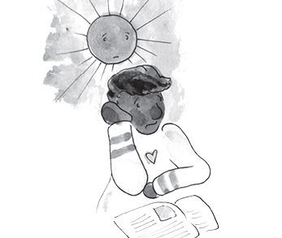
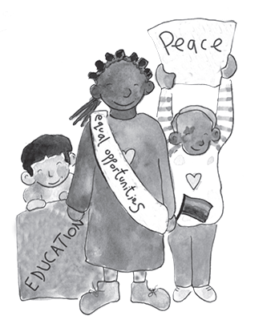

THE ARIO
INFORMATION FOR ADULTS
CHILDREN SPEAK OUT
CHILD SAYS, “I LOVE BEING AT HOME.”
Children have mixed feelings about how the virus has affected their lives. Some say they hate the virus and it’s led them to be bored, lonely, angry and more.
Some children say they like being at home and spending time with their families. Other children say, it’s a relief to not attend school. Every child has a unique set of feelings.

AVOID JUDGEMENT EXPERTS SAY, “LISTEN”
Adults need to listen well and respond without judgement to what the children share. If we criticize the children and disagree and tell them how they should feel they might stop sharing. If a child says, “I want the virus to stay forever and stay out of school” and the parent says, “School is important. With an attitude like that you’ll never get good grades.” The child will stop chatting. Children chat freely when adults listen and are not judgmental about what they say.
Children might also mention other reasons they don’t want to attend school or other unrelated problems. If the children’s chats are different than the messages of the book, adults can arrange to CHAT more after they read
CHILDREN SPEAK OUT WITH IMPORTANT MESSAGES
We live in a challenging time. We can educate the children about how to be safe and encourage them to use their voices to be heroes who speak out to inform and protect others.
